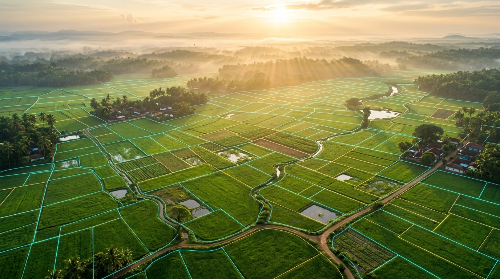
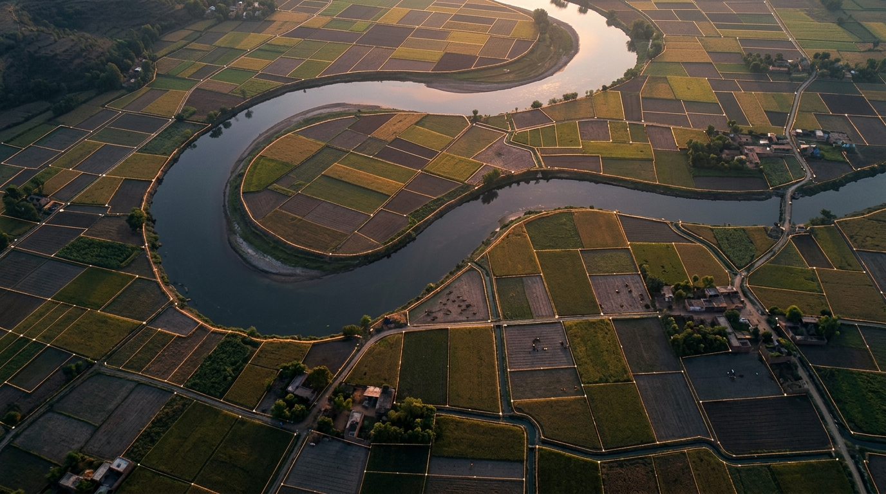

Accelerating National Linear Infrastructure Clearances
BHU-DRISHTI transforms land acquisition from reactive dispute firefighting into proactive statutory risk governance. Correlating sub-meter cadastral surveys with gazette milestones, the platform mitigates delay probabilities and eliminates capital idle time.
Select Authority Tier
Dedicated command consoles tailored for each administrative hierarchy level.
National Apex Authority
Joint Secretary (Land Acquisition), MoRTH
Macro portfolio capital risk triage across all 15 corridors and inter-ministerial gazette directives.
State Revenue Department
Principal Secretary (Revenue & Land Records)
State-wide district clearance velocity analytics and DILRMP revenue cadastral digitization index.

LEVEL 3 • DISTRICTDistrict CALA & Collector
District Magistrate & Competent Authority
Cadastral Khasra survey inspector and RFCTLARR Section 25 mandatory 1-year lapse countdown.
Project Executing Agency
Chief General Manager & Project Director, NHAI
Linear corridor package milestone tracking and BhoomiRashi CSV dataset batch ingestion engine.
The Statutory Governance Lifecycle
How BHU-DRISHTI automates risk mitigation from notification to physical possession.
Gazette Notification (3A/3D)
Automated ingestion of BhoomiRashi 2.0 e-gazette notifications with RoW alignment mesh.
Cadastral GIS Verification
Sub-meter Khasra plot matching with state DILRMP digital land maps to identify encumbrances.
XAI Risk & Delay Prediction
SHAP-powered machine learning models forecasting title litigation, forest, and compensation risks.
Sec 25 Lapse Prevention
Mandatory 1-year award determination timer and DBT escrow disbursement governance.